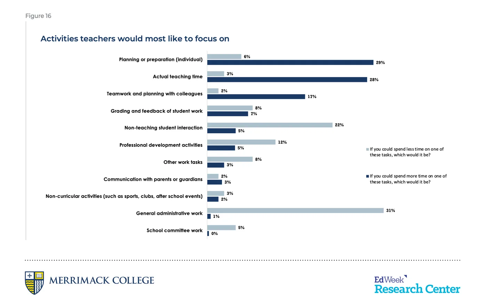
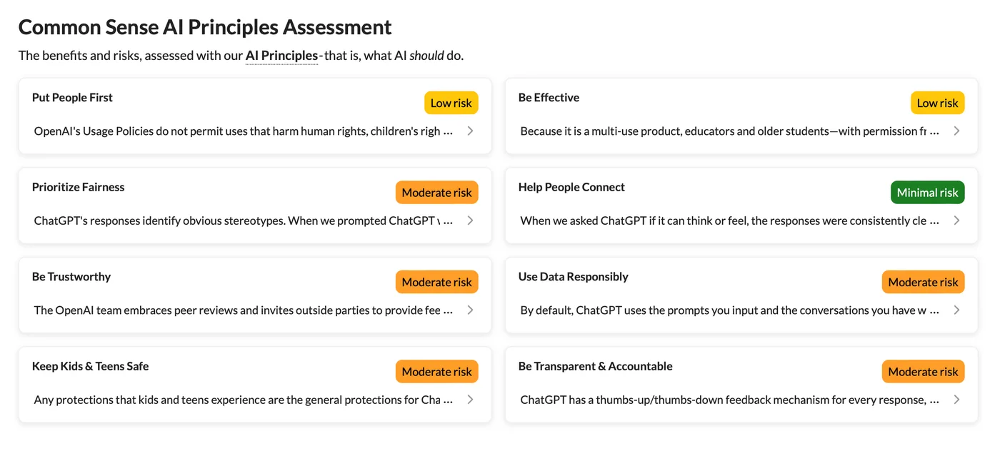

“Religion In Public Schools, Explained” - Via Laws And Court Cases
"Here are answers to some frequently asked questions about religion in school, the separation of church and state, and school prayer.”
A weekly collection of education-related news from around the web.
← Previous Issue · Next Issue →
September has begun with a burst of activity.
In our features today, you can take a big step back at the macro objectives of education in a lengthy and thoughtful essay coauthored by Kent Maguire from the Hewlett Foundation. The essay looks at the role education can play in increasingly contentious times. Also in the features, find an excellent FAQ that highlights the various laws over the years that have set boundaries and expectations for the role of religion in public education in America.
Also this week, the Assessment section offers different ways of measuring soft skills and engagement. In Adolescence and Tech, the discussion about the great cell phone correction continues on. And in the Safety section, find helpful reflections on safety, following the recent school shooting in Georgia.
Last, in the workplace section, find a survey from two years ago by Merrimack College examining teachers needs and wants at this time. The survey has been repeated in 2023 and 2024, but the 2022 results offer more information about what teachers most want to be doing. I found the chart below surprising: when asked what they would most like to focus on in their work, a greater percentage or respondents list planning and preparation ahead of even actual teaching time.
As always, also find a host of developments in the AI section at the end.
These and more, enjoy!
Peter
PS. Do you have new faculty or new leadership who would benefit from this newsletter? Let me know, or invite them to subscribe here.

"Here are answers to some frequently asked questions about religion in school, the separation of church and state, and school prayer.”
“This article attempts to reframe education’s purpose away from the recent market-based assumptions of neoliberalism and toward a renewed civic purpose for education in a changing society. We try to make the case for why public schools still matter to democratic preparation, what kinds of shifts are needed to equip young people to be full participants in our society, and how this effort might be carried out across the country’s diverse contexts. These categories form the basis of an agenda for large-scale positive change, which we hope will spark more organizations and individuals to engage in similar work.”
“These days, she thinks, students either want to do all of their work online, at their own pace, or they want everything to happen face to face. They don’t want to have to do both.”
“When the screening ended, after midnight, Questlove was shaken. Since he was 7 years old, he said, he had modeled himself on Prince — his fashion, his overflowing creativity, his musical rule-breaking. So “it was a heavy pill to swallow when someone that you put on a pedestal is normal.” That was the bottom line for him: that Prince was both extraordinary and a regular human being who struggled with self-destructiveness and rage.”
“In the traditional education system there is a strong tendency to focus on hard skills (knowledge) like reading, writing, maths, languages, science and technology. However, when we know that 65% of students will be doing jobs that do not exist, soft skills development is a critical part of being ready for job success."
“A survey from the council found 42 percent of council member respondents reported that building administration, school boards or community members lodged complaints or put restrictions on lessons related to politics, an election or current events, Kopplin said on WPR’s “Wisconsin Today.”"
“Teachers are the linchpin in helping students develop intellectual humility, both in how they respond to being wrong or challenge themselves and in the tone and structure they set for classroom discussions. Students develop more openness and resilience in classes where teachers readily admit to their own mistakes and maintain a class climate encouraging students to react respectfully when peers disagree or make mistakes.”
“I’ve had this experience with reluctant writers again and again — when a topic clicks with a student, an essay can unfurl spontaneously.”
“Curated well, organized logically, illustrated with appropriate diagrams and maps, reference books can be a joy. And I suspect they’re a joy that many of us share, even if we are loath to say so publicly for fear of being labeled midwitted.”
“For over 20 years, writers around the world have participated in National Novel Writing Month, or #NaNoWriMo, as it’s known online. The challenge is simple: Write 50,000 words in the month of November. Well, as simple as writing 50,000 words can be. (That’s 1,667 words per day, for those of you doing the math at home.) Of course, using a generative artificial intelligence platform, like ChatGPT, could make those words go by much quicker. But is that really ethical? In the spirit of the event? Good for the craft of creative writing in general?”
“Belonging… Autonomy… Competence… Self-Esteem… Trust… Purpose”
With the northern hemisphere school year starting, writing on AI and education has spiked again. Find excellent posts on assessments with AI, uses of AI in learning, and more in the Education section.
In the features, find an excellent exploration into the directions human-to-human relationships might take in an age of relational AI. Michelle Culver charts out four possible futures and explores the conditions and implications of each. This is an extraordinarily important conversation, especially for schools. My sense is that the effects of AI on our social lives will be even more significant than the effects of AI on our learning lives. In the other feature, Yuval Noah Harari dives into the risks of social AI. His essay is an important warning — Culver’s essay offers paths forward.
Elsewhere, find developments in Claude, commitments by organizations as formidable as the Mayo Clinic to launch AI programs, and even an exploration into using AI as a board member.
Also, Common Sense Media’s AI Principles Assessment offers a rating system for evaluating AI models for safety. See a sample below, and check it out to compare different AI models against each other. Below are ChatGPT’s ratings, which contrast Claude’s.
These and more, enjoy!
Peter

“I’ve created a resource to proactively envision how young people might relate to and utilize chatbots, with different impacts on human connection. The framework below maps four different possible futures, each representing the most common chatbot experience for young people.”
“To foster “fake intimacy,” bots will not need to evolve any feelings of their own; they just need to learn to make us feel emotionally attached to them… What might happen to human society and human psychology as algorithm fights algorithm in a battle to fake intimate relationships with us, which can then be used to persuade us to vote for politicians, buy products or adopt certain beliefs? A partial answer to that question was given on Christmas Day 2021, when a 19-year-old, Jaswant Singh Chail, broke into the Windsor Castle grounds armed with a crossbow, in an attempt to assassinate Queen Elizabeth II. Subsequent investigation revealed that Mr. Chail had been encouraged to kill the queen by his online girlfriend, Sarai.”
“One of the most significant changes in our revised AI Assessment Scale is our perspective on assessment security and assessment validity… It is a potentially disruptive but absolutely necessary perspective which understands that permitting any use of AI effectively permits all use of AI, and since it is undetectable and sophisticated across domains, the distinction between previous Levels 2, 3, 4, and even 5 is somewhat arbitrary. In the revised version, we take the stance that assessment security, in the traditional sense, is only possible at Level 1, but that assessment validity is possible throughout. We will discuss this further in a forthcoming journal article.”
“Students seem to cheat a lot, generally… but they cheated at the same rates before the advent of A.I. What has increased is the number of teachers and adults who seem convinced that all the kids are cheating… Opinions in education, as a rule, move very quickly and oftentimes in a reactionary way. But the actual implementation of any consensus can take decades to complete. This inefficiency can be harmful—it’s taken far too long to remove phones from schools, for example—but it also allows for little panics like the current one around large-language-model cheating.”
“Creative Ideation… Research & Analysis… Data-Driven Insights… Adaptation & Localization… Content Generation… Intelligent Assistance.”
“Claude and ChatGPT-4o’s performance was breathtaking. AI returned 90% of the same comments or insights our human board made (we compared notes). They were able to suggest the same priorities the board did (with the associated tradeoffs) — including driving enterprise value, balancing growth and cash runway, and taking on more technology risk… Think of what this could mean for any of your high brain power work. Less stress, knowing you didn’t overlook obvious angles or issues. A quick gut-check to anticipate questions and develop decent answers (which you will improve). And a thought partner to point out your blind spots — risks you forgot to consider or unintended consequences you didn’t think of. Whether interviewing for a job, admissions to a business school, or trying to obtain asylum … I can’t imagine not having the AI role play to better prepare.”
“Reviewers told the report’s authors that AI summaries often missed emphasis, nuance and context; included incorrect information or missed relevant information; and sometimes focused on auxiliary points or introduced irrelevant information. Three of the five reviewers said they guessed that they were reviewing AI content.”